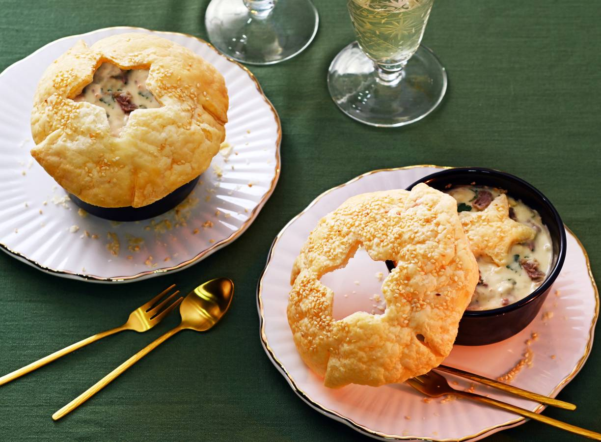

Ragout met bladerdeegdakje
Hoofdgerecht
Terwijl het vlees zachtjes suddert in bouillon, kun jij je storten op de smakelijke roux en het bijzondere bladerdeegbakje.
Het sterretje in het dakje? Dat tik je aan tafel met je lepel in de ragout!
Ingrediënten
- 300 g rundersoepvlees
- 2 runderbouillontabletten
- 1l water
- 270 g vers bladerdeeg
- 1 el milde olijfolie
- ½ el witte sesamzaad
- 1 middelgrote ui
- 2 tenen knoflook
- 25 g ongezouten roomboter
- 30 g tarwebloem
- 125 ml verse slagroom
- 10 g verse peterselie
- 2 tl worcestershiresauce
Bereidingswijze
- Bestrooi het vlees met peper en eventueel zout en snijd grotere stukken kleiner. Doe het vlees samen met de bouillonblokjes en het water in een braadpan.
Breng aan de kook, draai het vuur laag en laat 2 uur met de deksel op de pan zachtjes koken. Haal het vlees uit de pan en bewaar de bouillon.
-
Verwarm ondertussen de oven voor op 200 °C. Rol het bladerdeeg dun uit met de deegroller, het bijgeleverde bakpapier gebruik je niet.
Zet een ramekin ondersteboven op het bladerdeeg en snijd er een cirkel uit die 3 cm groter is dan de ramekin. Maak zo een cirkel per persoon.
-
Druk met het uitsteekvormpje een ster in het midden van de cirkels aan, maar druk niet door.
Snijd in elke cirkel 4 inkepingen van 4 cm vanuit de buitenkant naar het midden. Besmeer de cirkels met een de helft van de olie en bestrooi met het sesamzaad.
- Vorm per persoon een prop van Ø12 cm van aluminiumfolie, besmeer rondom met de rest van de olie en leg ze iets uit elkaar op een met bakpapier beklede bakplaat.
Leg over elke prop een cirkel bladerdeeg en druk ze, met de inkepingen iets over elkaar, voorzichtig dicht. Bak ca. 15 min. in de oven.
-
Snipper ondertussen de ui en snijd de knoflook fijn. Verhit de boter in een pan en bak de ui en knoflook op laag vuur 5 min. Schep regelmatig om. Voeg de bloem toe en bak nog 2 min. op middelhoog vuur (roux).
Voeg 200 ml bouillon (per 4 personen) en de slagroom toe aan de roux en laat al roerend met een garde op middelhoog vuur binden.
-
Snijd de peterselie fijn. Trek met 2 vorken het vlees in stukjes en voeg met de worcestershiresaus en peterselie toe aan de roux. Breng op smaak met peper en eventueel zout. Laat 3 min. op laag vuur inkoken.
-
Verdeel de ragout over de ramekins en leg het bladerdeegdakje erop. Laat iedereen aan tafel met de achterkant van een lepel een tik op de ster geven, zodat deze in de ragout valt.
